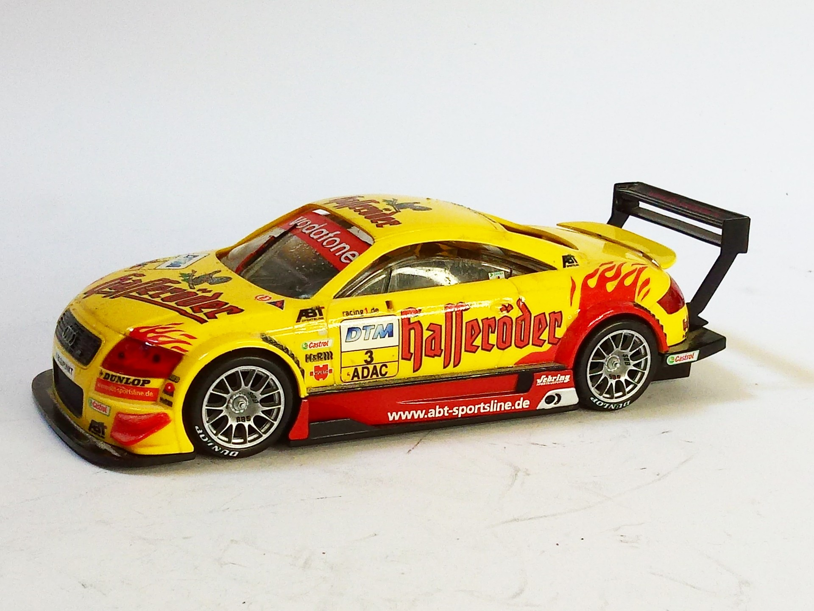

Auto e veicoli stradali · scale model archive
Audi TT-R ABT
Audi TT-R ABT — Kit: Revell, Scale: 1/32. as raced in DTM 2002 #1/32 #Revell

Photo gallery
English description
as raced in DTM 2002
#1/32 #Revell
Descrizione italiana
as corse in DTM 2002.